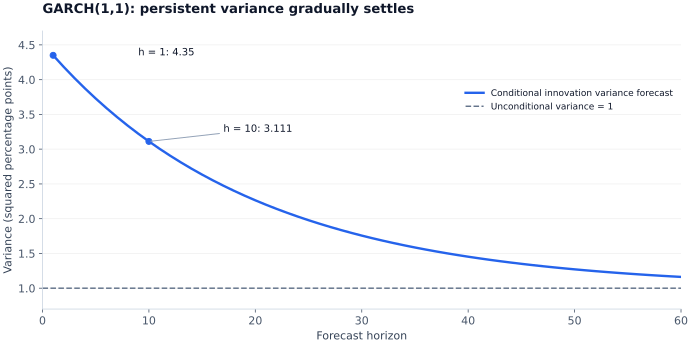

ARCH, GARCH, and conditional volatility
Returns can be difficult to predict while their volatility clusters. Conditional variance models describe how the scale of future innovations changes with past information.
Separate the mean from the scale
Here $\mu_t$ and $h_t$ are determined by information at $t-1$. They are the conditional mean and innovation variance. Return autocorrelations may be small while squared or absolute returns remain dependent. Changing conditional variance is compatible with a constant unconditional variance when the model's moment conditions hold.
State the return units. If returns are measured in percentage points, $h_t$ is in squared percentage points and $\sqrt{h_t}$ is a percentage-point standard deviation. Converting decimal returns to percentages multiplies variances by $100^2$.
ARCH models yesterday's squared surprises
For ARCH(1), a finite unconditional second moment exists under $\alpha_1<1$, giving $E[h_t]=\omega/(1-\alpha_1)$ under the standard innovation assumptions. Conditional Gaussianity does not make the unconditional distribution Gaussian: mixing high- and low-variance periods can generate fat tails. Higher moments require stronger conditions than the variance condition.
An ARCH LM diagnostic regresses fitted squared mean-model residuals on a constant and $q$ lags of those residual squares. Test the joint zero-lag restriction, often using an asymptotic $n_{\mathrm{aux}}R^2\sim\chi_q^2$ approximation with the auxiliary regression's usable sample size. First ensure the mean specification has not left substantial linear serial correlation.
GARCH adds persistence in the variance itself
With standardized innovations and $\alpha+\beta<1$, the usual finite unconditional variance is
$\alpha$ measures reaction to new squared innovations and $\beta$ carries past conditional variance. Their sum governs expected variance persistence in this specification. The finite-second-moment condition should not be confused with every possible strict-stationarity condition: processes can have different distributional and moment properties.
At $\alpha+\beta=1$, an IGARCH specification with positive intercept has no finite unconditional variance of this form. The intercept-free exponentially weighted moving-average variance recursion is a special related case. Multiplying a one-period volatility by the square root of horizon is not generally valid under arbitrary conditional volatility dynamics and mean dependence.
Worked variance forecast
Take illustrative percentage-point returns with $\omega=0.05$, $\alpha=0.10$, $\beta=0.85$, current variance $h_t=4$, and current innovation $\varepsilon_t=-3$. Then
The long-run variance is $\bar h=0.05/(1-0.95)=1$. For $h\ge1$, future conditional innovation variance forecasts satisfy
At horizon 10, this is approximately $3.111$, with standard deviation $1.764$ percentage points. This is the variance of an innovation at a future date, not the variance of a ten-period cumulative return. The latter needs aggregation of the relevant future variances and any covariance terms.

Asymmetry and heavy tails are distinct choices
Symmetric GARCH gives equal variance responses to equal positive and negative innovations. A GJR-style variance equation adds a sign indicator:
With the displayed convention, $\gamma>0$ increases the response to negative innovations. Positivity and finite-variance restrictions depend on the full specification; for symmetric standardized innovations, the familiar finite-variance condition involves $\alpha+\beta+\gamma/2$. Threshold-GARCH names vary across software, so always show the equation and power being modeled.
EGARCH instead models $\log h_t$, guaranteeing positive variance after exponentiation. One convention is $\log h_t=\omega+\beta\log h_{t-1}+\alpha(|z_{t-1}|-E|z|)+\gamma z_{t-1}$; a negative $\gamma$ then increases the effect of negative standardized shocks. Modeling asymmetry and selecting a heavy-tailed innovation distribution solve different problems.
A Student-$t$ innovation must be standardized to variance one when $h_t$ is the conditional variance. Gaussian quasi-maximum likelihood can target variance dynamics under suitable assumptions even without Gaussian innovations, with an appropriate robust covariance; correct tail forecasts require more than a successful variance fit.
Check standardized residuals and connect to risk
Inspect $\hat z_t=\hat\varepsilon_t/\sqrt{\hat h_t}$ for residual mean dependence, remaining squared dependence, distributional mismatch, parameter constraints, and stability across samples. Evaluate forecasts at realistic origins; avoid using future observations to initialize or select the model being evaluated.
For a one-period return model with standardized innovation quantile $q_a$, a monetary loss $L=-Vr$ has upper-tail quantile $VaR_{1-a}=V(-\mu-\sigma q_a)$, when the return units and portfolio value $V$ are consistent. This sign convention converts a lower return-tail quantile into an upper loss quantile. See the separate Finance notes for Expected Shortfall, tail assumptions, estimation, and backtesting.
Study sources and further reading
Study basis: Mehdi Hosseinkouchack, Econometrics, Section 5; Andrea Ugolini, Advanced Econometrics, Lectures 06–08. The official arch forecasting documentation provides implementation-oriented variance forecast definitions.
The explanations and numerical examples here are a rewritten study synthesis. Examples use illustrative inputs unless stated otherwise; the original study PDFs are not redistributed.